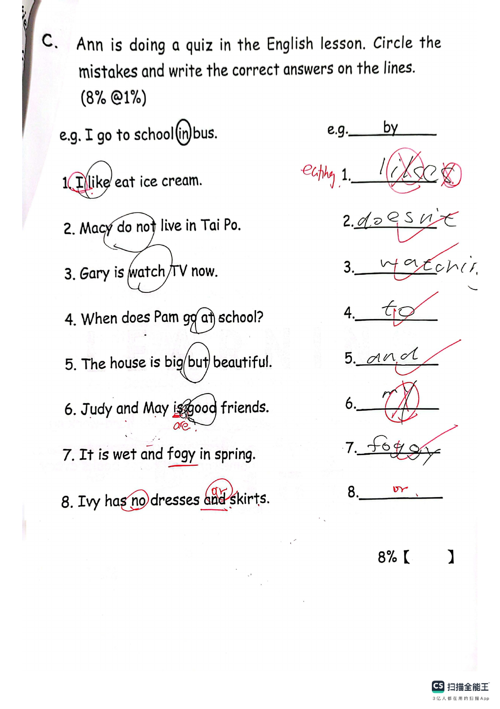
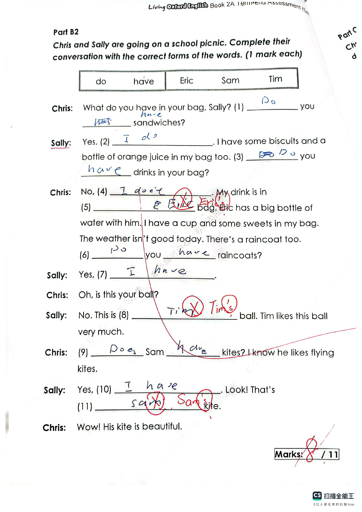

Answer: 7 seconds
已掌握
| # | 单词/词组 | 中文意思 | 例句/说明 | 已掌握 |
|---|---|---|---|---|
| noun 名词 | ||||
| 1 | postcard | 明信片 | I sent a postcard to my friend. | |
| 2 | restaurant | 餐馆 | We eat dinner in a restaurant. | |
| 3 | robot | 机器人 | The robot can move. | |
| 4 | train | 火车；训练 | We travelled to the city by train. | |
| 5 | Sunday | 周日 | We visit Grandma on Sunday. | |
| 6 | river | 河流 | The river flows through the town. | |
| 7 | flower | 花 | This flower is red. | |
| 8 | pupil | 小学生 | The pupil reads a book. | |
| 9 | family | 家庭 | My family is happy. | |
| 10 | meat | 肉类 | I eat meat for dinner. | |
| 11 | poem | 诗歌 | Read the poem. | |
| 12 | glasses | 眼镜 | He wears glasses. | |
| phrase 短语 | ||||
| 13 | school bus | 校车 | We take the school bus every morning. | |
| noun phrase 名词短语 | ||||
| 14 | swimming pool | 游泳池 | I swim in the swimming pool. | |
| adjective 形容词 | ||||
| 15 | famous | 著名的 | This is a famous place. | |
| 16 | difficult | 困难 | This question is difficult. | |
| 17 | pretty | 漂亮的 | The flower is pretty. | |
| verb phrase 动词短语 | ||||
| 18 | tell a story | 讲故事 | I tell a story to my little brother. | |
| uncategorized 未分类 | ||||
| 19 | believe | 相信 | I believe you are telling the truth. | |
| 20 | fold | 折叠 | Please fold the paper in half. | |
| # | 单词/词组 | 中文意思 | 例句/说明 | 已掌握 |
|---|---|---|---|---|
| adjective 形容词 | ||||
| 1 | excellent | 优秀 | Your work is excellent. | |
| 2 | false | 错误的 | The statement "A week has eight days" is false. | |
| 3 | angry | 生气的 | Mum was angry because Jack sold the cow. | |
| 4 | popular | 受欢迎的 | He is popular in class. | |
| 5 | ugly | 丑陋的 | I was hairless, toothless and ugly. | |
| 6 | careless | 粗心的；不小心的 | A careless mouse ran across the lion's paw. | |
| noun 名词 | ||||
| 7 | home | 家 | We stayed at home in the afternoon. | |
| 8 | website | 网站 | The school website has news. | |
| 9 | fin | 鱼鳍 | A fish has a fin. | |
| 10 | 邮件 | I got some mail today. | ||
| 11 | interviewer | 采访者；面试官 | The interviewer asks questions. | |
| 12 | signature | 签名（名词） | Please write your signature at the bottom of the form. | |
| 13 | sculpture | 雕塑 | We saw a stone sculpture in the park. | |
| 14 | flat | 公寓 | We live in a flat. | |
| 15 | festival | 节日 | We go to the festival. | |
| 16 | vocabulary | 词汇 | Reading can improve your vocabulary. | |
| 17 | English | 英语 | We have English on Monday. | |
| noun phrase 名词短语 | ||||
| 18 | board game | 桌游 | We play a board game after school. | |
| 19 | Exam Week | 考试周 | Exam Week is from 17th April to 21st April. | |
| 20 | a handbag | 手提包 | They gave me a handbag. | |
| 21 | General Studies | 常识科 | Some pupils like General Studies. | |
| verb 动词 | ||||
| 22 | weigh | 称重 | We weigh the bag. | |
| 23 | roll | 转动 | The ball can roll. | |
| preposition 介词 | ||||
| 24 | behind | 在后面 | The cat is behind the box. | |
| 常见动词 Common Verbs | ||||
| 25 | play | 玩；戏剧/剧本 | I play football. | |
| phrase 短语 | ||||
| 26 | look after | 照料 | I look after my little sister. | |
| verb phrase 动词短语 | ||||
| 27 | cheer sb. up | 使某人开心 | I tell Tom a joke to cheer him up. | |
| 28 | go on rides | 乘坐游乐设施（如过山车） | We went on rides at the theme park. | |
| uncategorized 未分类 | ||||
| 29 | line | 行 | Write your name on the first line. | |
| 30 | assessment | 测试 | We have a maths assessment on Friday. | |
| # | 单词/词组 | 中文意思 | 例句/说明 | 已掌握 |
|---|---|---|---|---|
| time/date 时间日期 | ||||
| 1 | January | 一月 | January is the first month. | |
| time unit 时间单位 | ||||
| 2 | year | 年 | A year has 12 months. | |
| 3 | month | 月 | A month has many days. | |
| numbers 数字 | ||||
| 4 | five | 5 | Five is 5. | |
| 5 | seven | 7 | Seven is 7. | |
| 6 | nine | 9 | Nine is 9. | |
| 7 | ten | 10 | Ten is 10. | |
| 8 | fifteen | 15 | Fifteen is 15. | |
| 9 | sixteen | 16 | Sixteen is 16. | |
| ordinal numbers 序数 | ||||
| 10 | first | 第一 | This is the first shape. | |
| solid shape 立体图形 | ||||
| 11 | triangular prism | 三棱柱 | A triangular prism has triangular faces. | |
| 12 | hexagonal prism | 六棱柱 | A hexagonal prism has hexagonal faces. | |
| 13 | pentagonal pyramid | 五棱锥 | A pentagonal pyramid has one pentagonal base and five triangular side faces. | |
| 14 | sphere | 球 | A sphere is round. | |
| plane shape 平面图形 | ||||
| 15 | triangle | 三角形 | A triangle has three sides. | |
| # | 单词/词组 | 中文意思 | 例句/说明 | 已掌握 |
|---|---|---|---|---|
| numbers 数字 | ||||
| 1 | 3-digit number | 三位数 | A 3-digit number has three digits. | |
| operations 运算 | ||||
| 2 | addition | 加法 | Addition means putting numbers together. | |
| geometry 几何 | ||||
| 3 | obtuse angle | 钝角 | An obtuse angle is greater than 90 degrees and less than 180 degrees. | |
| question word 题目词 | ||||
| 4 | count | 数数 | Count from 1 to 10. | |
| answer 答案 | ||||
| 5 | correct | 正确的 | Choose the correct answer. | |
| place value 位值 | ||||
| 6 | units | 个位 | The digit is in the units place. | |
| 7 | 5-digit number | 五位数 | 12,345 is a 5-digit number. | |
| comparison 比较 | ||||
| 8 | more | 更多 | 8 is more than 5. | |
| 9 | lighter | 更轻的 | A pencil is lighter than a brick. | |
| quantity 数量 | ||||
| 10 | pair | 双 | A pair means two things together. | |
| position 位置 | ||||
| 11 | arrow | 箭头 | The arrow points to the right. | |
| operations calculation 运算 | ||||
| 12 | difference | 差 | The difference is the answer in subtraction. | |
| 13 | product | 积 | The product is the answer in multiplication. | |
| 14 | subtract A from B | B-A | "Subtract A from B" means B - A. | |
| 15 | division | 除法 | Division is the opposite of multiplication. | |
| 16 | quotient | 商 | The quotient is the answer in division. | |
| 17 | divide A by B | A 除以 B | Divide A by B. | |
| teacher math vocabulary 老师数学词汇 | ||||
| 18 | between ... and ... | 在……和……之间 | 7 is between 6 and 8. | |
| currency money 货币 | ||||
| 19 | note | 纸币 | This is a five-dollar note. | |
| 20 | expensive | 昂贵的 | This toy costs $50. It is more expensive than the $20 toy. | |
| measurement 测量 | ||||
| 21 | metre | 米 | A metre is 100 centimetres. | |
| 22 | measure | 测量 | We measure the length with a ruler. | |
| 23 | distance | 距离 | Find the distance between the two points. | |
| 24 | millimeter | 毫米 | One millimeter is one tenth of a centimeter. | |
| 25 | kilogram | 千克 | One kilogram is 1,000 grams. | |
| data charts 统计图 | ||||
| 26 | pictogram | 象形图 | Read the pictogram. | |
| geometry tool 几何工具 | ||||
| 27 | set square | 三角尺 | A set square helps us draw angles. | |
| 句型结构 | ||||
| 28 | Angle ... is the smallest. | 角......是最小的。 | Angle B is the smallest. | |
| 29 | ... is to the east of ... | ......位于......的东侧。 | The school is to the east of the park. | |
| 30 | ... is to the west of ... | ......位于......的西侧。 | The bank is to the west of the school. | |

